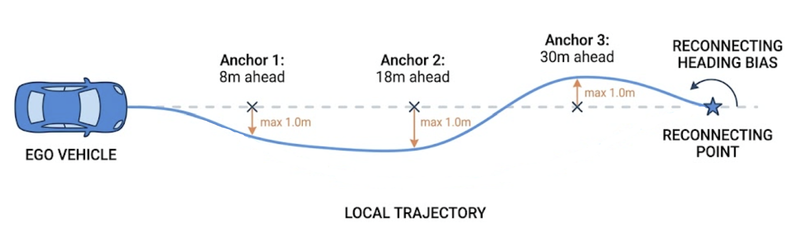

Autonomous Driving Local Planner with Reinforcement Learning
A hierarchical CARLA planning system for highway merges, unprotected left turns, and sudden cut-ins using global A* routing, PPO local trajectory generation, and fixed PID tracking.
Overview
This project focuses on the kinds of traffic interactions where simple reactive rules often break down: contested highway merges, unprotected left turns, and abrupt cut-ins. I built the system so planner changes could be measured in a controlled way without retuning the low-level controller every time.
Implementation
The stack keeps global A* routing and longitudinal and lateral PID tracking fixed, then replaces the local planning layer with a PPO policy. At each simulator step, the learned policy predicts short-horizon trajectory shaping parameters and target speed, letting the ego vehicle react to surrounding traffic while staying aligned with the route-level objective.
I built the training and evaluation pipeline in Python with reproducible scenario generation, observation design for route and traffic interaction cues, reward shaping for safety and progress, and rollout analysis tooling. The action space was designed around trajectory generation rather than direct throttle and steering, which kept the learning problem focused on planning instead of low-level control.
Results
In the tuned highway-merge benchmark, the PPO planner reached an 86% success rate over 100 episodes while outperforming a scripted aggressive baseline on total successes. The project also exposed an honest tradeoff: the learned planner improved completion reliability, but comfort and decisiveness still needed work when measured with jerk-based metrics and long-tail completion times.
What I Built
- Hierarchical planner combining global A* guidance, PPO local planning, and fixed PID tracking.
- Reproducible CARLA scenarios for merges, left turns, and sudden cut-ins.
- Observation and reward design for route adherence, safety, progress, and comfort.
- Evaluation tooling for success rate, crash rate, completion time, and jerk-based ride quality.
Project Media

Evaluation Metrics
| Method | Episodes | Successes | Crashes | Success Rate | P90 Time Success (s) | P90 Max Jerk Success (m/s^3) |
|---|---|---|---|---|---|---|
| Baseline (Aggressive) | 100 | 83 | 17 | 83% | 11.6 | 446.354 |
| PPO | 100 | 86 | 10 | 86% | 17.4 | 547.137 |